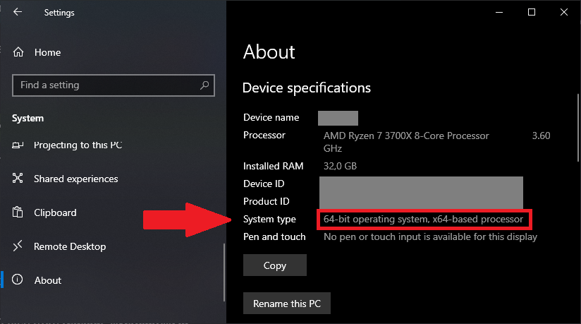
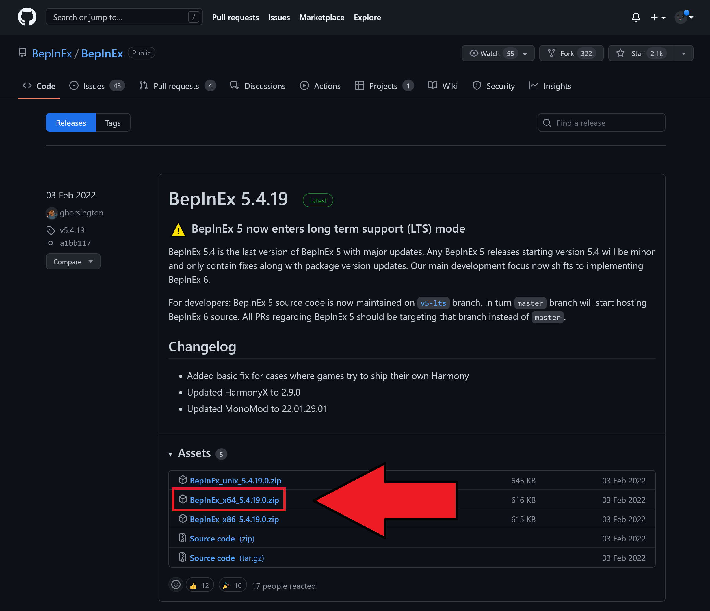
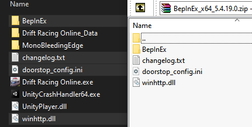
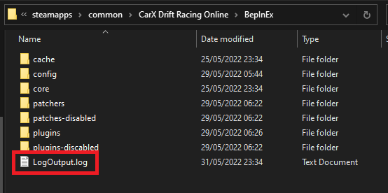
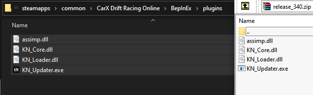

Installation
This mod does not work on Windows 7
Please refer to the installation instructions in your preferred language in the table of contents on the right.
English
Step 1: Make sure to enable the moddable version of CarX
You are required to enable the moddable version of CarX in steam to be able to load mods!
- Go to Steam, open your library and right click on CarX Drift Racing Online
- Select
Properties - Select
BETAS - Select the version of the game that says
moddable
Once you have selected the moddable beta, your game should start downloading the moddable build which you should see in your Steam downloads. Once that's complete, you are ready to continue
Step 2: Install BepInEx Mod Loader
BepInEx is a mod loader that we require to be able to load the mod in the game.
Go to the BepInEx Releases Page and download the latest stable release.
Make sure NOT to download the Source Code. What we require is the BepInEx_x64_[version].zip whereas version is the version you are installing at the moment.
If you're running Windows in 32bit, you need the x86 file instead of x64 as chosen in our example.
Do I need 64 or 32 bit?
You can easily check if your system is running 32 or 64 bit by going into
Windows Settings System About

Example for 64bit

Once downloaded, extract the contents of the .zip archieve into your CarX Drift Racing Online folder.

Verify BepInEx Installation
To verify that you have successfully installed BepInEx, start your game and check if a Log file gets created in your BepInEx folder inside the CarX game folder

I do not have that file
If the LogOutput.txt does not generate, it's very likely that you have missed a point, or perhaps the BepInEx installation has changed.
Please refer to the official BepInEx documentation on how to install it here:
https://docs.bepinex.dev/articles/user_guide/installation/index.html
Step 3: Install KiNO
Do NOT download the source code
Once you have installed BepInEx and verified that the Log file gets created to ensure BepInEx works properly, continue by downloading the latest release of KiNO in the release page.
Once you have downloaded the release file, you need to extract the contents of it into your BepInEx plugins folder.
If you don't have the plugins folder, you can create it yourself

I'm getting VCRUNTIME140.dll Is Missing error
Please install the Visual C++ Redistributable for Visual Studio 2015, 2017 and 2019.
You will need the vcredist_x64.exe.
That's it, when you start up CarX now it should be ready. Please take a look at our usage guide to get started!
If you have any more issues, take a glance at our Troubleshooting Page before creating a Github Ticket or asking on Discord as we have covered the most commonly asked questions there :)
German/Deutsch
Schritt 1: Wechsel auf die modifizierbare CarX Version
Du musst die modifizierbare Version von CarX in Steam einstellen damit du Mods laden kannst!
- Öffne Steam, gehe in deine Bibliothek und Rechts-Klicke auf CarX Drift Racing Online
- Gehe in die
Eigenschaften - Wähle
BETAS - Wähle die Version des Spiels welche
moddableim Namen hat
Sobald du die modifizierbare Version ausgewählt hast, sollte der Download in Steam starten. Sobald dies fertig ist kannst du mit den nächsten Schritten weiter machen.
Schritt 2: Installiere BepInEx Mod Loader
BepInEx ist ein mod loader welches wir für KiNO benötigen um es in unserem Spiel zu nutzen.
Gehe in die BepInEx Releases Seite auf Github und lade dir die neuste stabile Version runter.
Lade auf keinen Fall den Source Code (Quelltext) runter. Wir benötigen die BepInEx_x64_[version].zip worin version die gerade zu installierende Version ist.
Wenn du Windows in 32bit hast, dann brauchst du die x86 Datei anstatt der x64 welches wir im Beispiel genutzt haben.
Brauche ich 64 oder 32 bit?
Du kannst ganz einfach überprüfen ob dein System 32 oder 64 bit nutzt indem du in den Windows Einstellungen hierhin gehst:
Windows Einstellungen System Info
Beispiel für 64bit
Sobald der Download abgeschlossen hat, extrahiere den Inhalt der .zip in deinen CarX Drift Racing Online Ordner.
Verifiziere die BepInEx Installation
Um die Installation von BepInEx zu verifizieren, starte einfache das Spiel und überprüfe ob eine Log Datei im BepInEx Order erstellt wurde
Ich habe diese Datei nicht
Wenn die LogOutput.txt Datei nicht erstellt wurde, hast du wahrscheinlich einen Schritt verpasst, oder vielleicht hat sich die Installtion von BepInEx geändert.
Bitte greife auf die offiziellen BepInEx Installationsdokumentation zurück. Diese findest du hier:
https://docs.bepinex.dev/articles/user_guide/installation/index.html
Step 3: Installiere KiNO
Lade nicht den Source Code (Quelltext) runter
Sobald du BepInEx erfolgreich installiert und auf funktion verifiziert hast, kannst du mit dem Download der KiNO Mod fortfahren. Diesen findest du auf der Releases Seite auf Github.
Sobald du die Datei heruntergeladen hast, extrahiere dessen Inhalt in den BepInEx plugins Ordner.
Wenn du den plugins Ordner nicht hast, dann kannst du diesen selber erstellen
Ich bekomme den VCRUNTIME140.dll Is Missing Fehler
Bitte installiere die Visual C++ Redistributable für Visual Studio 2015, 2017 and 2019.
Du benötigst die vcredist_x64.exe.
Das war's, du kannst nun CarX starten und es sollte funktionieren. Schau die unseren Usage Guide (Nutzungsanleitung, Englisch) an um dich mit den Funktionen vertraut zu machen.
Wenn du noch Probleme hast, schaue dir unsere Troubleshooting Seite an bevor du ein Github Ticket erstellst oder im Discord fragst, weil wir dort die häufig gestellten Fragen beantworten :)
Russian/Русский:
Needs contribution by someone speaking the language to be reworked similar to the English version!
- Убедитесь что вы находитесь на модовой версии игры. Для этого откройте стим, правый клик по CarX Drift Racing Online, затем
Свойства..., перейдите во вкладкуБЕТА-ВЕРСИИи из списка выбирете версию игры с припиской (moddable). - Установите BepInEx mod loader, если ещё не установлен.
Для этого скачайте x64 версию BepInEx. Не скачивайте Unix версию.
Распакуйте следующие файлы из BepInExx64%version%.zip в папку игрыCarX Drift Racing Online:
> BepInEx
doorstep_config.ini
winhttp.dll -
Скачайте последний релиз KiNO со вкладки с релизами (НЕ НУЖНО СКАЧИВАТЬ SOURCE CODE).
Распакуйте следущие файлы из архива release_%version%.zip:
> assimp.dll
KN_Core.dll
KN_Loader.dll
KN_Updater.exeв папку `CarX Drift Racing Online\BepInEx\plugins`.Если в папке
BepInExнет папкиplugins, то создайте её вручную, либо она должна создаться автоматически после первого запуска игры. -
Если мод не работает или у вас вылезает ошибка
VCRUNTIME140.dll Is Missing, вам может потребоваться скачать и установить Visual C++ Redistributable for Visual Studio 2015, 2017 and 2019. Вам потребуется файл vcredist_x64.exe. -
Краткое описание функций мода можно посмотреть здесь.
Portuguese/Português:
Needs contribution by someone speaking the language to be reworked similar to the English version!
- Instale o BepInEx mod loader caso você ainda não o tenha.
Baixe a versão x64 do BepInEx. Não baixe a versão Unix.
Extraia os seguintes arquivos de BepInExx64%version%.zip dentro da sua pasta doCarX Drift Racing Online:
> BepInEx
doorstep_config.ini
winhttp.dll -
Baixe a última versão do KiNO da aba de releases (NÃO BAIXE O CÓDIGO FONTE).
Extraia os seguintes arquivos de release_%version%.zip:
> assimp.dll
KN_Core.dll
KN_Loader.dll
KN_Updater.exedentro da pasta `CarX Drift Racing Online\BepInEx\plugins`.Caso você não tenha a pasta
pluginsdentro da pastaBepInEx, então crie você mesmo ou inicie o jogo para que a pasta seja criada automaticamente. -
Caso o mod não funcione ou você esteja com o erro
VCRUNTIME140.dll Is Missing, talvez seja necessário baixar e instalar o Visual C++ Redistributable for Visual Studio 2015, 2017 and 2019. Você irá precisar executar o arquivo vcredist_x64.exe. -
Uma descrição resumida das funcionalidades pode ser encontrada aqui.